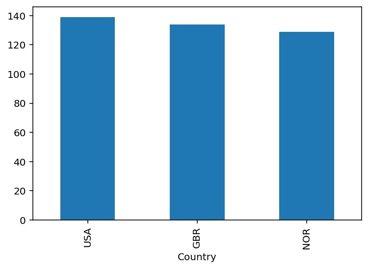

Illy wureit
ניתוח מדליות אלוימפיות בענף השייט
שייט אולימפי
שאלה:
מה הם שלושת המדינות שזכו בהכי הרבה מדליות אולימפיוטת בספורט השייט?
לינק למאגר הנתונים שבחרתי
עשר השורות הראשונות של המאגר

שלושת המדינות המובילות